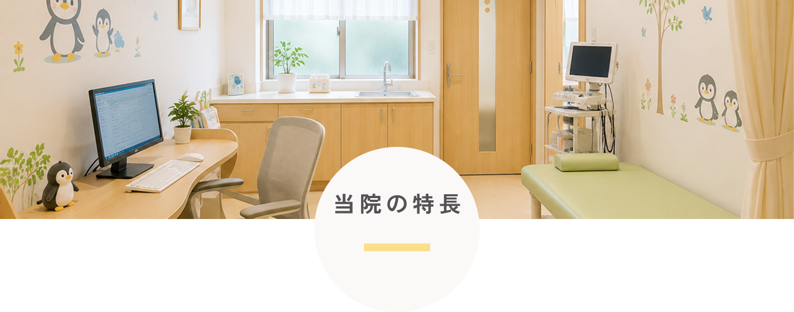
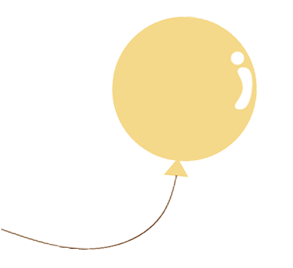
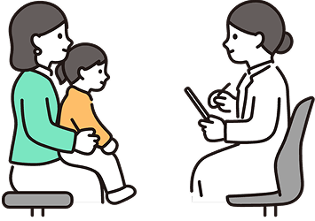
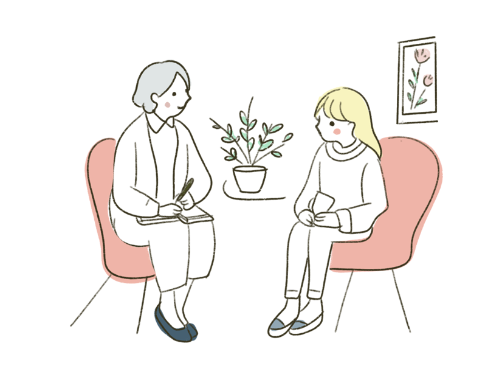
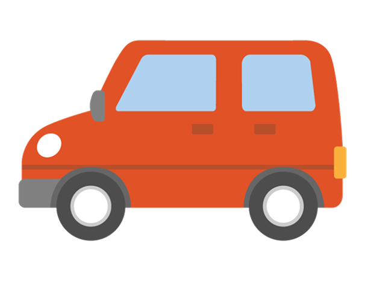

小児科の専門医による丁寧な診察と対応
当院の院長は小児科の専門医です。お子さまにも親御さんにもわかりやすい説明をいたします。

オンライン予約で待ち時間を短縮
お手持ちのパソコン・スマートフォンから予約ができるシステムを導入しております。
感染症と健診を分けた安心な動線
発熱・感染症のお子さまと、健診・予防接種のお子さまの待合を分離。 安心してご来院いただけます。
授乳室・おむつ交換台・キッズスペースあり
小さなお子様が利用しやすように清潔なスペースをご用意しております。
育児・アレルギー相談もご気軽にどうぞ
離乳食・発達・アレルギー性疾患まで、病気以外のご相談も大歓迎。かかりつけ医として親身にお答えします。

各種予防接種 ・乳幼児健診に対応
定期接種から任意接種まで幅広く対応。乳幼児健診と合わせてスケジュール管理もサポートします。
ベビーカー・車椅子でそのままお入りいただけます
クリニック内は完全バリアフリー設計。 ベビーカーや車椅子のままスムーズにご来院いただけます。
駐車場・駐輪場も充実しています
近隣に提携駐車場、クリニック地下には専用駐輪場をご用意。お車・自転車でのご来院も安心です。

小児科の専門医による丁寧な診察と対応
当院の院長は小児科の専門医です。お子さまにも親御さんにもわかりやすい説明をいたします。
オンライン予約で待ち時間を短縮
お手持ちのパソコン・スマートフォンから予約ができるシステムを導入しております。
感染症と健診を分けた安心な動線
発熱・感染症のお子さまと、健診・予防接種のお子さまの待合を分離。安心してご来院いただけます。
授乳室・おむつ交換台・キッズスペースあり
小さなお子様が利用しやすように清潔なスペースをご用意しております。
育児・アレルギー相談もご気軽にどうぞ
離乳食・発達・アレルギー性疾患まで、病気以外のご相談も大歓迎。かかりつけ医として親身にお答えします。
各種予防接種・乳幼児健診に対応
定期接種から任意接種まで 幅広く対応。乳幼児健診と合わせてスケジュール管理もサポートします。
ベビーカー・車椅子でそのままお入りいただけます
クリニック内は完全バリアフリー設計。 ベビーカーや車椅子のままスムーズにご来院いただけます。
駐車場・駐輪場も 充実しています
近隣に提携駐車場、クリニック 地下には専用駐輪場をご用意。お車・自転車でのご来院も安心です。